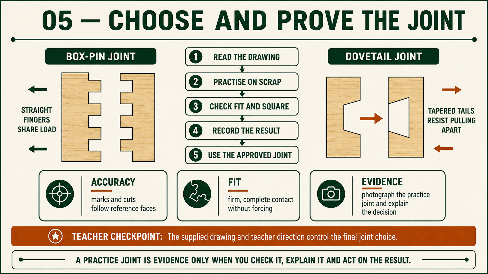
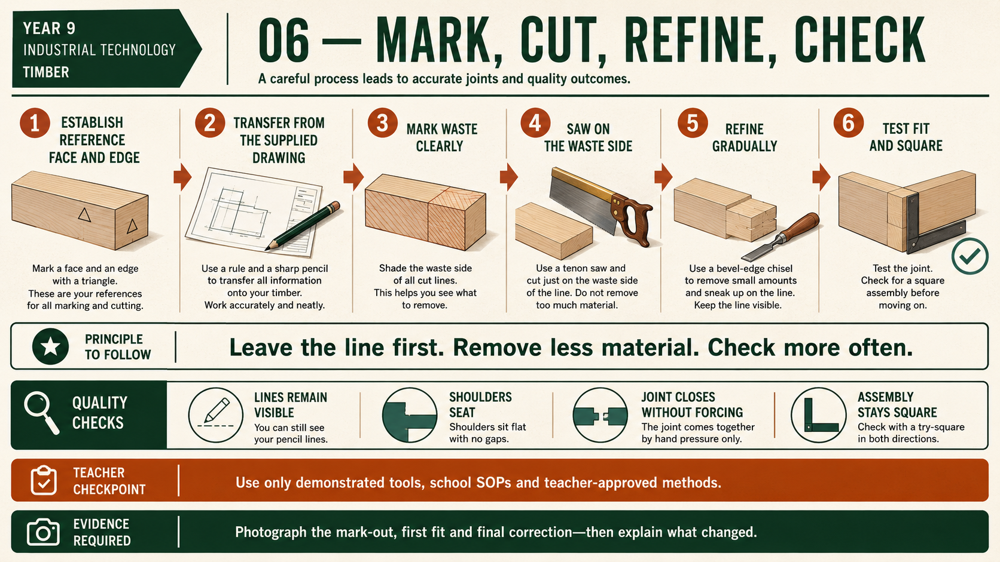

Your work
Student details
Your entries save automatically in this browser. Use Print / Save PDF before leaving the page.
Weeks 5-6
This module
Distinguish alternative-joint knowledge from the assessed project, then prepare to manufacture the required rebate-and-housing construction from the supplied drawing.
Theory 1
Comparing box-pin joints as alternative knowledge

A box-pin joint connects two timber components through alternating rectangular pins and spaces. The pins on one piece fit the spaces on the other, creating an interlocking corner. This makes the joint useful comparative knowledge when studying how timber joints gain alignment, gluing area and visible evidence of accuracy.
For this course, however, the box-pin joint is not the assessed Carry-All corner. The supplied working drawing requires rebate-and-housing construction. Students must not copy the reference photograph, estimate a pin pattern or mark and cut a box-pin joint on Carry-All project stock. The photograph supports comparison only; it cannot override the working drawing or teacher direction.
When analysing a box-pin joint, focus on principles that can transfer to other work: consistent reference faces, clear waste identification, progressive checking and a fit that is assessed without forcing. These principles help explain why a repeated marking error can spread across a joint and why removed material cannot simply be replaced. They also provide a useful contrast with the stepped rebate-butt corner shown on the Carry-All drawing.
- Identify alternating pins and spaces in the comparative example.
- Describe how the interlocking form differs from a rebate butt joint.
- Separate general joint-quality principles from the assessed project requirements.
- Use the supplied Carry-All drawing—not the reference photograph—for construction.
- Record box-pin knowledge as a labelled comparison, not project-process evidence.
A strong comparison explains both similarity and difference. Both joint types require clear references, controlled material removal and progressive fit checks, but their forms and project purposes are not interchangeable. The assessed folio should therefore show that you can recognise the box-pin principle while still following the rebate-and-housing construction required for the Carry-All.
Theory 2
Comparing dovetail joints as alternative knowledge
A dovetail joint connects two timber components through matching tails and pins. The sloping form helps the assembled joint resist pulling apart in one direction. Dovetails are useful comparative knowledge because they show how joint geometry, component orientation and close-fitting surfaces can affect strength and workmanship.
The dovetail shown here is not part of the assessed Carry-All construction. Students must not use the photograph to estimate the number, spacing or angle of a joint, and must not mark or cut dovetails on Carry-All project stock. The working drawing requires a rebate butt joint at the corner and housings where shown. Those written details take priority over alternative examples.
When comparing a dovetail with the required construction, identify the way its tails and pins interlock and the importance of matching component orientation. Then contrast this with the stepped rebate-butt corner and recessed housings on the Carry-All drawing. The purpose is to build joint vocabulary and design understanding, not to choose a different construction.
- Identify tails, pins and the direction in which the joint resists separation.
- Explain how the dovetail form differs from the required rebate butt joint.
- Recognise that accurate reference use and progressive checking matter in both examples.
- Do not transfer alternative-joint geometry to Carry-All project stock.
- Label any folio comparison clearly as theory rather than assessed manufacture.
Comparative knowledge is valuable when it helps you explain why different joints suit different designs and manufacturing contexts. It becomes misleading when an alternative example is treated as permission to change the assessed product. A strong response names the dovetail principle, identifies that it is not required here and returns to the supplied drawing for every Carry-All construction decision.
Theory 3
Applying the assessed rebate-and-housing construction

The Barbecue Carry-All must be manufactured from the supplied working drawing and teacher direction. These are the authoritative sources for the assessed construction. Do not scale the page, guess a missing detail or add a joint that is not shown. The required construction is rebate-and-housing: the drawing identifies a 5 mm rebate butt joint at the corner and a 5 mm housing where shown. It also identifies 12 mm pine components and a 3 mm plywood base.
It is essential to separate comparative theory from the required build. Box-pin and dovetail joints can help you compare how different timber joints work, but neither is the assessed Carry-All joint. Do not substitute one because it appears stronger, more familiar or more decorative. Do not mark or cut box-pin or dovetail geometry on Carry-All project stock. When theory and project work appear together, return to the working drawing and confirm which information actually controls manufacture.
Before any material is removed, identify the correct component, face, edge and orientation from the drawing. Use the reference convention demonstrated by your teacher and make the waste area clear. This matters because a correctly sized recess can still be wrong if it is on the wrong face, at the wrong location or matched to the wrong component. Cross-check the relevant views and written notes, then pause at the required teacher checkpoint.
Practice should support the assessed construction. On teacher-approved scrap, use only the demonstrated process to practise maintaining consistent references, recognising the shoulder and depth surfaces, identifying waste and checking a fit. The purpose is not to invent a new joint or method. It is to learn what a controlled rebate or housing should look like and to recognise a problem before the Carry-All stock is affected.
- Use the supplied working drawing as the project authority.
- Identify the 5 mm rebate butt joint and 5 mm housing only where shown.
- Keep box-pin and dovetail work clearly labelled as comparison theory.
- Practise the approved rebate-and-housing checks on authorised scrap.
- Dry-fit without forcing and obtain teacher approval before any correction.
Progressive fit checking protects the components from unnecessary damage. Inspect whether the rebate shoulders close as intended, whether the housing locates its matching part and whether the assembly remains correctly oriented. If a fit is tight, loose, damaged or unclear, stop. The exact diagnosis, practical method and correction remain controlled by the teacher, local SOP and SWMS. Removing more material without finding the cause can turn a correctable problem into a permanent fault.
Complete a dry fit before adhesive is introduced. Check the required corner, housings, base and internal parts together so that one apparently correct feature does not hide a whole-assembly problem. Your folio should include an annotated photograph or sketch showing how the drawing controlled the mark-out, a useful dry-fit photograph and a caption naming the check, any fault found and the teacher-approved correction or decision. This evidence proves that the finished result followed the authorised construction rather than an alternative remembered from theory.
Guided practice
Weeks 5-6 knowledge checks
Choose an answer, check it and use the progressive hints and feedback to improve.
Apply your learning
Scaffolded written responses
Write first, use the feedback prompts, then compare your reasoning with the model response.
Finish the two-week block
Save your evidence
Your work saves in this browser, but browser storage is not the official submission. Save the completed page as a PDF before changing devices or clearing browser data.
No marks, answers or personal information are sent from this webpage.